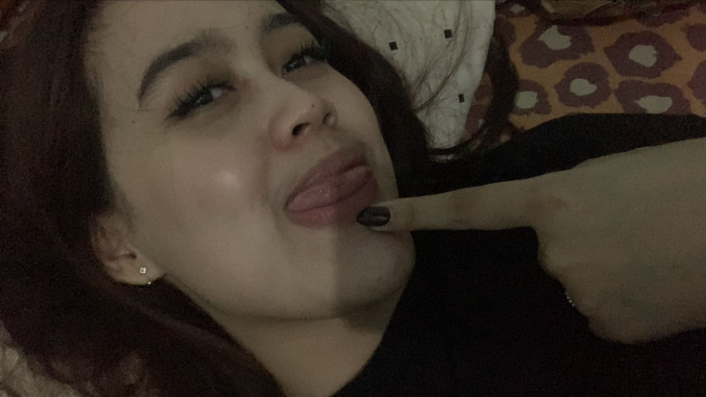

Saya termasuk orang yang suka malas-malasan, apalagi kalau sedang tidak mood atau tidak ada sesuatu yang menarik untuk dilakukan. Saya juga suka melakukan sesuatu sesuai keinginan sendiri dan terkadang menunda-nunda pekerjaan karena merasa masih punya banyak waktu. Selain itu, saya termasuk orang yang tidak sabaran, apalagi kalau harus menunggu sesuatu terlalu lama atau ketika keadaan tidak sesuai dengan yang saya inginkan. Hal-hal kecil saja terkadang bisa membuat saya kesal, meskipun sebenarnya bukan masalah yang besar.
Saya juga termasuk orang yang gampang marah, terutama ketika merasa kesal, kecewa, atau tidak dimengerti oleh orang lain. Kalau sudah emosi, terkadang saya sulit mengendalikan perkataan dan sikap saya sendiri. Saya bisa menjadi lebih sensitif dan mudah tersinggung, bahkan untuk hal-hal yang mungkin dianggap biasa oleh orang lain. Sebenarnya, saya tidak selalu ingin marah, tetapi terkadang saya sulit mengendalikan emosi ketika sesuatu mengganggu pikiran saya. Saya sadar kalau sifat seperti ini tidak selalu baik dan bisa membuat orang lain merasa tidak nyaman. Karena itu, saya ingin belajar lebih sabar, mengurangi rasa malas, dan mencoba mengendalikan emosi agar bisa menjadi pribadi yang lebih baik.
Get in touch with me via: cantikasw@gmail.com